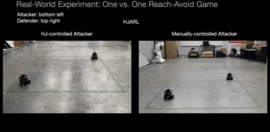
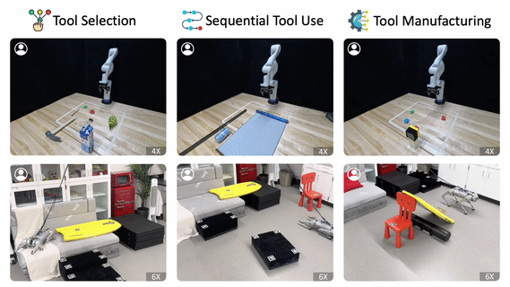
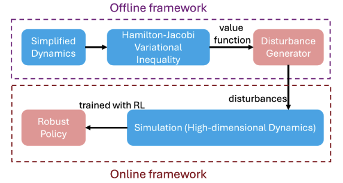

Xilun Zhang
I am a first-year PhD student in the Autonomous Systems Lab at Stanford University, advised by Prof. Marco Pavone. I also work with Prof. Chelsea Finn. I previously worked with Mengdi Xu and Prof. Ding Zhao at Carnegie Mellon University, and Prof. Mo Chen at Simon Fraser University.
I am passionate about intelligent decision-making algorithms with applications in Robotics. I am particularly interested in Robot Foundation Models and Online Adaptations. If you're interested in collaboration, feel free to reach out to me via email and I am always happy to chat!
News
- 2026/03 Gave an invited talk at Nvidia Robotics on CoVer-VLA!
- 2025/09 I am starting my PhD at Stanford, working on Vision-Language-Action Models and World Models!
Publications



Learning Robust Policies via Interpretable Hamilton-Jacobi Reachability-Guided Disturbances
IEEE International Conference on Robotics and Automation (ICRA), 2025.
Abridged in AAAI 2025 Workshop on Multi-Agent AI in the Real World. (oral presentation)
Abridged in AAAI 2025 Workshop on Multi-Agent AI in the Real World. (oral presentation)


Teaching
- Course Assistant of 24-784 Trustworthy AI Autonomy, Carnegie Mellon University, Spring 2024
- Course Assistant of 24-767 Modern Control: Theory and Design, Carnegie Mellon University, Fall 2023
Service
- Conference Reviewer: ICRA (2025, 2026), ICLR 2026, RSS 2026
- Journal Reviewer: RA-L (2024, 2025, 2026)
Projects

Generalizable BeamWalking for Legged Robots with Reinforcement Learning
16-831: Intro to Robot Learning (by Deepak Pathak)

Enhancing Robustness of Reinforcement Learning using Hamilton-Jacobi Reachability
16-886: Models & Algorithms for Interactive Robotics (by Andrea Bajcsy)